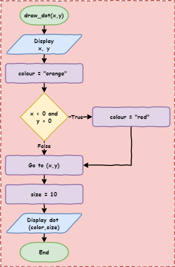

Python Turtle - Lesson 6#
Part 1: Boolean logic#
Boolean Introduction#
In programming Boolean is all about True and False values:
Boolean variables only contain either
TrueorFalseComparison operators (
==,!=,>,<>=or<=) return eitherTrueorFalseBoolean operators (we’ll learn about these later) return either
TrueorFalse
The values True and False are special values. If you type them into your IDE the syntax highlighting will indicate that they are special.
In Python testing if something is True or False is called testing the turthiness. When you compare two values, you are testing it’s truthiness.
Comparison operators#
The conditions in our if and while statements test truthiness using comparison operators. Let’s refresh those.
There are six comparison operators you can use. Create a new file called lesson_6_pt_1.py and enter the code below.
1print("jeff" == "jeff") # equal to
2print(1 != 1) # not equal to
3print(500 > 300) # greater than
4print(100 >= 250) # greater than or equal to
5print("a" < "q") # less than
6print(-30 <= 3) # less than or equal to
PRIMM:
Predict the six values the Shell will display (hint, they will be either
TrueorFalse).Run the code and see if your predictions are correct.
It doesn’t matter if the values are literals (magic numbers) or if they are stores in a variable. Change your code to the code below.
1score = 10
2print(score > 5)
PRIMM:
Predict if the code will print
TrueorFalseRun the code and see if your prediction was correct.
Boolean Operations#
You can also complete operations on Boolean values using Boolean operators. Boolean operations are like preforming a calculation, but only with Boolean values (ie. True and False). Like all things Boolean, they return a single True or False value. They are useful for creating complex condition tests.
There are three Boolean operators:
andornot
The not operator#
The simplest operator to understand is the not operator. It reverses the Boolean value:
not TruereturnsFalsenot FalsereturnsTrue
Change the code in your program to the code below:
1print("not True is:", not True)
2print("not False:", not False)
PRIMM:
Predict what you think will be written to the Shell when your run this code.
Run the code and check your predictions.
The and operator#
The and operator and the or operator are a little bit more complicated.
The and operators will return True if all the values in the operation are True.
Again, change your code so it reflects the code below:
1print("True and True is:", True and True)
2print("True and False is:", True and False)
3print("False and True is:", False and True)
4print("False and False is:", False and False)
5print("True and True and True is:", True and True and True)
6print("True and True and False is:", True and True and False)
PRIMM:
Predict what you think will be written to the Shell when your run this code.
Run the code and check your predictions.
Let’s Investigate that code
Code breakdown:
Line 1:print("True and True is:", True and True)True and True→ all values areTrue→ returnsTrueTrue and True is: Trueis printed
Line 2:print("True and False is:", True and False)True and False→ not all values areTrue→ returnsFalseTrue and False is: Falseis printed
Line 3:print("False and True is:", True and False)False and True→ not all values areTrue→ returnsFalseFalse and True is: Falseis printed
Line 4:print("False and False is:", True and False)False and False→ not all values areTrue→ returnsFalseFalse and False is: Falseis printed
Line 5:print("True and True and True is:", True and True and True)True and True and True→ all values areTrue→ returnsTrueTrue and True and True: Trueis printed
Line 6:print("True and True and False is:", True and True and False)True and True and False→ not all values areTrue→ returnsFalseTrue and True and False is: Falseis printed
The or operator#
The or operator is the inverse of the and operator.
The or operator will return True if any one of the values in the operation is True.
Change your code so it reflects the code below:
1print("True or True is:", True or True)
2print("True or False is:", True or False)
3print("False or True is:", False or True)
4print("False or False is:", False or False)
5print("True or True or True is:", True or True or True)
6print("True or False or False is:", True or False or False)
PRIMM:
Predict what you think will be written to the Shell when your run this code.
Run the code and check your predictions.
Let’s Investigate that code
Code breakdown:
Line 1:print("True or True is:", True or True)True or True→ at least one value isTrue→ returnsTrueTrue or True is: Trueis printed
Line 2:print("True or False is:", True or False)True or False→ at least one value isTrue→ returnsTrueTrue or False is: Falseis printed
Line 3:print("False or True is:", True or False)False or True→ at least one value isTrue→ returnsTrueFalse or True is: Falseis printed
Line 4:print("False or False is:", True or False)False or False→ no values areTrue→ returnsFalseFalse or False is: Falseis printed
Line 5:print("True or True or True is:", True or True or True)True or True or True→ at least one value isTrue→ returnsTrueTrue or True or True: Trueis printed
Line 6:print("True or True or False is:", True or True or False)True or True or False→ at least one value isTrue→ returnsTrueTrue or False or False is: Trueis printed
Using Boolean operators#
So far, we have been returning True or False from other values of True and False. This isn’t that useful but remember comparison operators return Boolean values. Boolean operators can create conditions with multiple comparison operators. This provides complex conditions for your if and while statements.
Consider the following code:
1print(7 < 8 and "a" < "o")
PRIMM:
Predict what you think will be written to the Shell when your run this code.
Run the code and check your predictions.
Let’s Investigate that code
Code breakdown:
Line 1:print(7 < 8 and "a" < "o")first Python will complete the comparison operations from left to right
7 < 8returnsTrue"a" < "o"returnsTrue
the code is now:
print(True and True)True and TruereturnsTrue
Python prints
Trueto the Shell
Combining multiple comparison operations
Conditions with multiple comparisons need comparisons on both sides of the Boolean operator.
10 > 5 and 10 > 13 is not the same as 10 > 5 and 13.
Part 2: Mouse input in Turtle#
To reinforce our understanding of Boolean logic, we are going to do something new with Turtle. So far, we have only accepted user input via the Shell, but Turtle can also use mouse input (and keys as well).
We are going to use the code below for our Boolean exercise, but we will have to explore it first.
Download lesson_6_pt_2.py file and save it to your lesson folder.
1import turtle
2
3## Prepare the windows and turtle ##
4def set_scene():
5 turtle.setup(800, 600)
6
7 ## Respond to mouse click (signal) ##
8 turtle.onscreenclick(draw_dot)
9
10 ## Set up the grid ##
11 my_ttl.speed(0)
12 for i in range(4):
13 my_ttl.forward(400)
14 my_ttl.back(400)
15 my_ttl.right(90)
16 my_ttl.penup()
17
18
19## Reaction to signal (slot) ##
20def draw_dot(x, y):
21 print(x, y)
22 color = "orange"
23 size = 10
24 my_ttl.goto(x, y)
25 my_ttl.dot(size, color)
26
27
28## Main Program
29my_ttl = turtle.Turtle()
30set_scene()
31my_ttl.hideturtle()
Predict what you think will be written to the Shell when your run this code.
Run the code and check your predictions.
Let’s Investigate that code.
We’ll do the code breakdown in three sections in the order they are executed:
Lines 29to31: the main programLine 29:my_ttl = turtle.Turtle()→ create a Turtle object and names itmy_ttlLine 30:set_scene()calls theset_scene()functionLine 31:my_ttl.hideturtle()make the turtle invisible
Lines 4to16: theset_scenefunctionLine 4:def set_scene()→ defines theset_scenefunction without any argumentsLine 5:turtle.setup(800, 600)→ creates a800x600windowLine 8:turtle.onscreenclick(draw_dot)→ this is newif a mouse click is detected:
calls the
draw_dotfunctionpasses to the
draw_dotfunction thexandycoordinates of where the mouse clicked
Line 11:my_ttl.speed(0)→ a turtle speed of0means you don’t see the turtle moveLines 12to15: draws four lines from(0, 0)making the four quadrantsLine 16:penupprevents the turtle from drawing a line to the mouse click coordinates (try commenting it out and see what happens)
Lines 20to25: thedraw_dotfunctionLine 20:def draw_dot(x, y):defines the
draw_dotfunctionaccepts the two arguments
xandywhich are passed fromline 8turtle.onscreenclick()always passes thexandycoordinates as arguments
Line 21: prints thexandycoordinates to the Shell (to help you plan your code)Line 22: assigns"orange"to the variablecolorLine 23: assigns10to the variablesizeLine 24: sends the turtle to thexandycoordinatesLine 25:my_ttl.dot(size, color)draws a dot at the turtle position of sizesizeand colourcolor
Exercises#
In this course, the exercises are the make component of the PRIMM model. Work through the following exercises and make your own code.
So far, the dot colour is always orange. In these exercises the quadrant of the mouse click will determine the dot colour.
To do this your will need to use:
if…elif…elsestatementsBoolean comparisons
Boolean operations
You will also need to remember how coordinates work in Turtle.

Exercise 1#
Download lesson_6_ex_1.py file and save it to your lesson folder. Below is its code.
1import turtle
2
3## Prepare the windows and turtle ##
4def set_scene():
5 turtle.setup(800, 600)
6
7 ## Respond to mouse click (signal) ##
8 turtle.onscreenclick(draw_dot)
9
10 ## Set up the grid ##
11 my_ttl.speed(0)
12 for i in range(4):
13 my_ttl.forward(400)
14 my_ttl.back(400)
15 my_ttl.right(90)
16 my_ttl.penup()
17
18
19## Reaction to signal (slot) ##
20def draw_dot(x, y):
21 print(x, y)
22 color = "orange"
23
24 ##################################
25 ######## Answer goes here ########
26 ##################################
27 """ Part A
28 Use an 'if' statement to set the dot color to red
29 when the mouse clicks in the top right quadrant
30
31 You can determine the position using the variables
32 x and y
33
34 To change the colour of the dot to red, run the command
35
36 color = 'red'
37
38 """
39
40 ##################################
41 ##################################
42 ##################################
43
44 my_ttl.goto(x, y)
45 size = 10
46 my_ttl.dot(size, color)
47
48
49my_ttl = turtle.Turtle()
50set_scene()
51my_ttl.hideturtle()
Follow the instructions in the comments from line 24 to line 42.
To help, here is the flowchart for the draw_dot function:

Exercise 2#
Download lesson_6_ex_2.py file and save it to your lesson folder. Below is its code.
1import turtle
2
3## Prepare the windows and turtle ##
4def set_scene():
5 turtle.setup(800, 600)
6
7 ## Respond to mouse click (signal) ##
8 turtle.onscreenclick(draw_dot)
9
10 ## Set up the grid ##
11 my_ttl.speed(0)
12 for i in range(4):
13 my_ttl.forward(400)
14 my_ttl.back(400)
15 my_ttl.right(90)
16 my_ttl.penup()
17
18
19## Reaction to signal (slot) ##
20def draw_dot(x, y):
21 print(x, y)
22 color = "orange"
23
24 ##################################
25 ######## Answer goes here ########
26 ##################################
27 """ Part B
28 Use both 'if' and 'else' to set the dot color to red
29 if the mouse is clicked in the top right quadrant and
30 green if clicked anywhere else
31 """
32
33 ##################################
34 ##################################
35 ##################################
36
37 my_ttl.goto(x, y)
38 size = 10
39 my_ttl.dot(size, color)
40
41
42my_ttl = turtle.Turtle()
43set_scene()
44my_ttl.hideturtle()
Follow the instructions in the comments from line 24 to line 35.
Exercise 3#
Download lesson_6_ex_3.py file and save it to your lesson folder. Below is its code.
1import turtle
2
3## Prepare the windows and turtle ##
4def set_scene():
5 turtle.setup(800, 600)
6
7 ## Respond to mouse click (signal) ##
8 turtle.onscreenclick(draw_dot)
9
10 ## Set up the grid ##
11 my_ttl.speed(0)
12 for i in range(4):
13 my_ttl.forward(400)
14 my_ttl.back(400)
15 my_ttl.right(90)
16 my_ttl.penup()
17
18
19## Reaction to signal (slot) ##
20def draw_dot(x, y):
21 print(x, y)
22 color = "orange"
23
24 ##################################
25 ######## Answer goes here ########
26 ##################################
27 """ Part C
28 Use 'if', 'elif' and 'else' keywords to set the dot color to
29 red when the mouse is clicked in the top right quadrant,
30 blue in the top left quadrant, yellow in the bottom left quadrant
31 and green in the bottom right quadrant
32 """
33
34 ##################################
35 ##################################
36 ##################################
37
38 my_ttl.goto(x, y)
39 size = 10
40 my_ttl.dot(size, color)
41
42
43my_ttl = turtle.Turtle()
44set_scene()
45my_ttl.hideturtle()
Follow the instructions in the comments from line 24 to line 36.